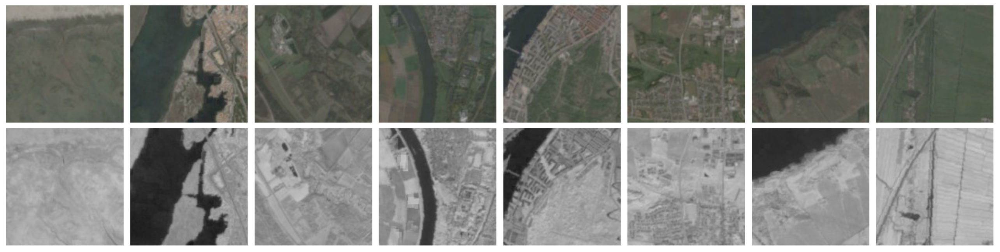
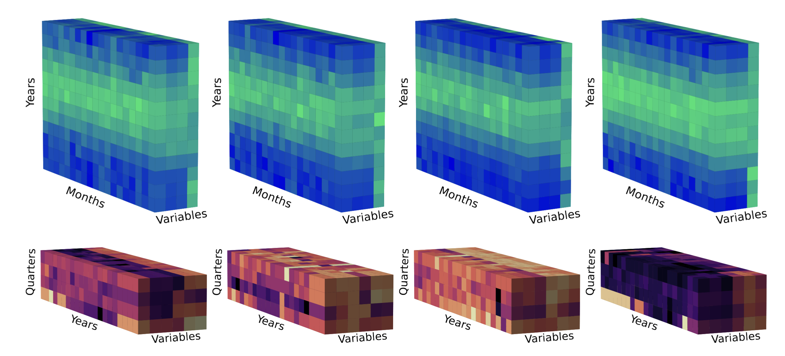

Environmental Predictors & Modalities
GeoPlant pairs every species observation with a set of environmental predictors; crucial for fine-grained, multimodal species distribution modeling. These predictors capture environmental context at both local and continental scale.
Overview
Each Presence-Only (PO) or Presence-Absence (PA) observation is provided with:
- A four-band 128×128 satellite image at 10 m resolution centered on the observation location.
- Time series of the past values for six satellite bands at the point location.
- Diverse environmental rasters at European scale (climatic, soil, elevation, land cover, and human footprint).
- Monthly time series of four climatic variables (2000–2019).
The dataset combines multiple sources, formats, and preprocessing steps to provide unified, observation-level predictors.
Environmental Rasters
We associate every observation with a rich set of environmental rasters, including:
- 19 bioclimatic rasters (CHELSA)
- 9 soil rasters (SoilGrids)
- High-resolution elevation raster (ASTER GDEM)
- Medium-resolution, multi-band land cover raster (MODIS)
- 16 human footprint rasters (Venter et al., with both summary and detailed layers)
All rasters are distributed as GeoTIFF files (WGS84, EPSG:4326), aligned to the same spatial extent (min_x, min_y) = (-32.26, 26.63), (max_x, max_y) = (35.58, 72.18), and pre-extracted as scalar values for each observation.
Land Cover
- Source: MODIS Terra+Aqua (MCD12Q1) via NASA Earthdata
- Resolution: ~500 m, multi-band (13 layers: land cover classes and confidence)
- Description: Each band represents a land cover class prediction (e.g., IGBP-17, LCCS-43) or confidence. Land cover variables are powerful predictors at all scales, improving bioclimatic SDM performance.
- Format: Multi-band GeoTIFF and CSV
- Access:
/EnvironmentalRasters/LandCover/ - Reference: MODIS User Guide
Human Footprint
- Source: Venter et al., 2016
- Resolution: 1 km
- Description:
- 16 low-resolution rasters: 14 detailed pressures (seven pressures × two time periods: 1993/2009), and two summary rasters.
- Pressures include: nightlights, population density, built environment, electrical infrastructure, cropland, pastureland, roads, railways, navigable waterways. Scores are normalized by biome for comparability.
- Format: GeoTIFF and CSV
- Access:
/EnvironmentalRasters/HumanFootprint/
Elevation
- Source: ASTER Global Digital Elevation Model V3
- Resolution: 30 m
- Description: Topography is a major factor in plant distributions. Provided as both a raster (GeoTIFF) and CSV of values at each observation.
- Access:
/EnvironmentalRasters/Elevation/
SoilGrids
- Source: SoilGrids
- Resolution: 1 km (aggregated from 250 m)
- Variables: 9 soil properties (e.g., pH, clay, organic carbon, nitrogen) at 5–15 cm depth
- Description: Soil is essential for modeling plant species ranges. Provided as GeoTIFFs (WGS84) and CSV.
- Access:
/EnvironmentalRasters/Soilgrids/
Satellite Images
Sentinel-2 RGB and NIR satellite images offer high-resolution local context for each observation.
- Patch size: 128 × 128 pixels (1.28 km × 1.28 km)
- Resolution: 10 m per pixel
- Bands: RGB (3-band, color JPEG) and NIR (1-band, grayscale JPEG)
- Source: Ecodatacube
- Processing: Images are cloud- and shadow-free composites from the same year as the observation. Pixel values are thresholded at 10,000, rescaled [0,1], gamma corrected (power 1/2.5), and finally mapped to [0,255] uint8.

Figure 1: 128×128 Sentinel-2 patches. Top: RGB, Bottom: NIR.
Satellite Time Series
Landsat time series add 21 years of quarterly surface reflectance at each location.
- Bands: R, G, B, NIR, SWIR1, SWIR2
- Seasons: 1999–2020 (84 steps)
- Format: CSV per band (one row per observation), plus 3D tensors [BAND, QUARTER, YEAR]
- Processing: Median point values per season, extracted and aggregated for all locations. Enables temporal modeling of vegetation change, fire, land use, etc.

Figure 2: Top row—19 years of 4 monthly climate variables; Bottom row—21 years of quarterly satellite band values for selected surveys.
Climatic Variables
CHELSA climate data offers both monthly and long-term summary variables.
- Monthly: 4 variables (mean/min/max temperature, precipitation) from Jan 2000–Dec 2019 (960 rasters)
- Averages: 19 “bioclim” variables averaged over 1981–2010 (e.g., mean annual temperature, precipitation seasonality)
- Resolution: 1 km (30 arcsec)
- Format: GeoTIFF and CSV, plus 3D tensors [RASTER-TYPE, YEAR, MONTH]
- Access:
/EnvironmentalRasters/Climate/
Data Access and Format
All predictors are pre-extracted for each PO/PA observation:
- Scalar values: CSVs (per observation).
- Images: JPEG (RGB/NIR), named by survey ID.
- Time series: CSV and tensor files.
- Full rasters: Available via Seafile for custom extraction.
For file structure, download instructions, and sample code, see the Resources page.
Return to Dataset Overview or continue to Baselines & Benchmarking for modeling results.